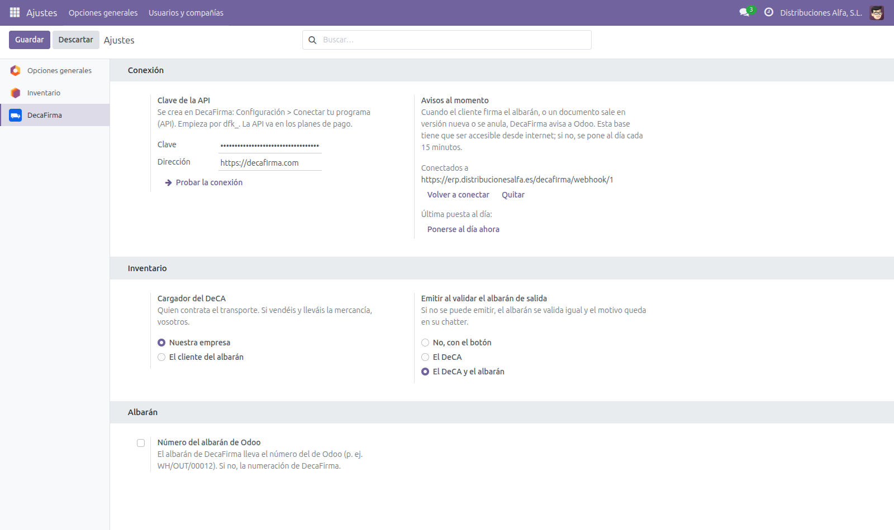

● DecaFirma de Fran<code>systems · DECA CONNECTOR
The connection between your Odoo and DecaFirma: the API key, the instant notices and every shipment with its documents (QR code, version, PDF and who signed), kept up to date on its own. It is the base of DecaFirma Inventory, which issues from your outgoing transfers.
✓ Odoo 17 · 18 · 19 · 20✓ Community and Enterprise✓ Free module✓ Orden FOM/2861/2012
The problem
Since 5 October 2026 road freight in Spain carries the electronic control document (DeCA) with its QR code (Ley 9/2025, Orden FOM/2861/2012 and Resolution of 5 June 2026).
Typing it twice
Customer, addresses, goods and weight are already in Odoo. Copying them into another program for every load is slow and brings mistakes.
A fine on the road
Driving without it is a serious infringement: from 401 to 600 € (art. 141.17 of the LOTT).
Signed papers lost
The delivery note signed on paper comes back days later, if it comes back, and nobody knows in the office whether the customer had remarks.
Features
Settings in two minutes
Every shipment and its documents
Delivery note signed on a phone
Access rights as in DecaFirma
Transport papers, ready to invoice
Signed notices
How it works
Create your DecaFirma account
7 days with everything, API included. No card.
Paste the API key
Created in DecaFirma, Configuración > Conectar tu programa. In Odoo, Settings > DecaFirma, and test the connection.
Connect the notices
One button: signatures, new versions and cancellations arrive at once.
Issue from Inventory
With DecaFirma Inventory, the DeCA and the delivery note come out of the outgoing transfer.
Screenshots
The user interface is in Spanish: the DeCA is a Spanish legal document.
01
Settings > DecaFirma
API key and connection test, instant notices and the last catch-up. The Inventario block comes with DecaFirma Inventory.

What is included
| Included in the connector | |
|---|---|
| API key, connection test and instant notices set up with one button | ✓ |
| Signed notices (HMAC-SHA256) and a catch-up every 15 minutes | ✓ |
| One record per DecaFirma shipment with its documents: QR code, version, status, PDF and signer | ✓ |
| Correct (new version, same QR code), cancel with a reason and send to the driver by email | ✓ |
| Sign Odoo's own delivery slip, or the DecaFirma one; Odoo's numbering or DecaFirma's | ✓ |
| Signed PDF attached, signer in the chatter and an activity when signed with remarks | ✓ |
| Transport papers with photo, number and net weight, marked as invoiced in Odoo and DecaFirma | ✓ |
| Access rights DecaFirma / Usuario and DecaFirma / Responsable | ✓ |
| Odoo 17, 18, 19 and 20, Community and Enterprise. User interface in Spanish | ✓ |
FAQ
→ What do I need?
A DecaFirma account with the API: it is included in the 7-day trial and, after it, comes with the Conexión add-on. The modules are free. Create your DecaFirma account.
→ Does it issue anything on its own?
No. This is the base. Install DecaFirma Inventory to issue the DeCA and the delivery note from your outgoing transfers; it installs this connector with it.
→ Does any data leave my Odoo?
Yes, to DecaFirma, which is the one that issues the DeCA. Nothing until you enter your own API key. Then, only when a document is issued, corrected, cancelled or sent: the data the DeCA requires (names, tax IDs and addresses of your company, the customer, the carrier and the driver, plates, products, packages and weights) and the delivery slip PDF when you sign Odoo's own. DecaFirma sends back the QR codes, PDFs, signatures and transport papers of your shipments. Remove the API key to stop it.
→ Does it work on Odoo Online?
No. Odoo Online does not install apps with Python code. It works on Odoo.sh and on your own server, Community or Enterprise.
→ What if my Odoo is not reachable from the internet?
Then the instant notices cannot arrive, and a scheduled action asks DecaFirma every 15 minutes. Ponerse al día ahora in Settings does it at once.
→ How long are the documents kept?
DecaFirma keeps them 12 months. In Odoo, the signed PDF and the transport paper photos stay attached to the transfer.
Watch it
Order from WhatsApp, planning by drag and drop, the DeCA in one click, the delivery note signed on the phone and the invoice with the fuel price revision. Spanish audio.
Support
DecaFirma is made by Francodesystems, in el Vallès. We build and maintain these Odoo modules ourselves, next to the DecaFirma app and its API.
Before you start
Write to us and we will tell you honestly whether issuing from Odoo fits the way you work.
Help to set it up
API key, notices and the first DeCA, by email. If you get stuck, we look at it with you.
Kept up to date
Odoo 17, 18, 19 and 20. Fixes on every version.
juan.canton@francodesystems.com · decafirma.com
More from DecaFirma and Francodesystems
🇪🇸 EN ESPAÑOL
● DecaFirma de Fran<code>systems · CONECTOR DEL DECA
La conexión de tu Odoo con DecaFirma: la clave de la API, los avisos al momento y cada envío con sus documentos (QR, versión, PDF y quién firmó), al día sin tocar nada. Es la base de DecaFirma: Inventario, que emite desde tus albaranes de salida.
✓ Odoo 17 · 18 · 19 · 20✓ Community y Enterprise✓ Módulo gratuito✓ Orden FOM/2861/2012
El problema
Desde el 5 de octubre de 2026 el transporte de mercancías por carretera lleva el documento electrónico de control (DeCA) con su QR (Ley 9/2025, Orden FOM/2861/2012 y Resolución de 5 de junio de 2026).
Teclearlo dos veces
Cliente, direcciones, mercancía y peso ya están en Odoo. Copiarlos en otro programa en cada porte es lento y trae errores.
Una multa en carretera
Circular sin él es infracción grave: de 401 a 600 € (art. 141.17 de la LOTT).
Albaranes firmados que se pierden
El albarán firmado en papel vuelve días después, si vuelve, y en la oficina nadie sabe si el cliente puso alguna observación.
Funciones
Ajustes en dos minutos
Cada envío y sus documentos
Albarán firmado en el móvil
Permisos como en DecaFirma
Papeles del porte, listos para facturar
Avisos firmados
Cómo funciona
Crea tu cuenta de DecaFirma
7 días con todo, la API incluida. Sin tarjeta.
Pega la clave de la API
Se crea en DecaFirma, Configuración > Conectar tu programa. En Odoo, Ajustes > DecaFirma, y prueba la conexión.
Conecta los avisos
Un botón: firmas, versiones nuevas y anulaciones llegan al momento.
Emite desde Inventario
Con DecaFirma: Inventario, el DeCA y el albarán salen del albarán de salida.
Capturas
01
Ajustes > DecaFirma
Clave de la API y prueba de conexión, avisos al momento y la última puesta al día. El bloque Inventario llega con DecaFirma: Inventario.
Qué incluye
| Incluido en el conector | |
|---|---|
| Clave de la API, prueba de conexión y avisos al momento con un botón | ✓ |
| Avisos firmados (HMAC-SHA256) y puesta al día cada 15 minutos | ✓ |
| Un registro por envío de DecaFirma con sus documentos: QR, versión, estado, PDF y quién firmó | ✓ |
| Corregir (versión nueva, mismo QR), anular con motivo y mandar al conductor por correo | ✓ |
| Firmar el albarán de Odoo o el de DecaFirma; numeración de Odoo o de DecaFirma | ✓ |
| PDF firmado adjunto, quién firmó en el chatter y una actividad si firma con reservas | ✓ |
| Papeles del porte con foto, número y peso neto, marcados como facturados en Odoo y en DecaFirma | ✓ |
| Permisos DecaFirma / Usuario y DecaFirma / Responsable | ✓ |
| Odoo 17, 18, 19 y 20, Community y Enterprise. Interfaz en castellano | ✓ |
Preguntas
→ ¿Qué necesito?
Una cuenta de DecaFirma con la API: va incluida en la prueba de 7 días y, después, con el extra Conexión. Los módulos son gratis. Crea tu cuenta de DecaFirma.
→ ¿Emite algo por sí solo?
No. Es la base. Instala DecaFirma: Inventario para emitir el DeCA y el albarán desde tus albaranes de salida; ese ya instala este conector.
→ ¿Sale algún dato de mi Odoo?
Sí, a DecaFirma, que es quien emite el DeCA. Nada hasta que pones tu propia clave de la API. Después, solo cuando se emite, corrige, anula o manda un documento: los datos que pide el DeCA (nombres, NIF y domicilios de tu empresa, el cliente, el transportista y el conductor, matrículas, productos, bultos y pesos) y el PDF del albarán si firmas el de Odoo. DecaFirma devuelve los QR, los PDF, las firmas y los papeles del porte de tus envíos. Quita la clave y se acaba.
→ ¿Funciona en Odoo Online?
No. Odoo Online no instala apps con código Python. Funciona en Odoo.sh y en tu propio servidor, Community o Enterprise.
→ ¿Y si mi Odoo no es accesible desde internet?
Entonces los avisos al momento no llegan, y una tarea programada pregunta a DecaFirma cada 15 minutos. Ponerse al día ahora, en Ajustes, lo hace en el acto.
→ ¿Cuánto tiempo se guardan los documentos?
DecaFirma los guarda 12 meses. En Odoo, el PDF firmado y las fotos de los papeles quedan adjuntos al albarán.
Míralo
El pedido desde WhatsApp, el planificador arrastrando, el DeCA con un clic, el albarán firmado en el móvil y la factura con la revisión del gasóleo.
Soporte
DecaFirma lo hace Francodesystems, en el Vallès. Hacemos y mantenemos estos módulos de Odoo nosotros mismos, junto con la aplicación de DecaFirma y su API.
Antes de empezar
Escríbenos y te decimos con sinceridad si emitir desde Odoo encaja en tu forma de trabajar.
Ayuda para ponerlo en marcha
Clave de la API, avisos y el primer DeCA, por correo. Si te atascas, lo vemos contigo.
Siempre al día
Odoo 17, 18, 19 y 20. Correcciones en cada versión.
juan.canton@francodesystems.com · decafirma.com
Más de DecaFirma y Francodesystems